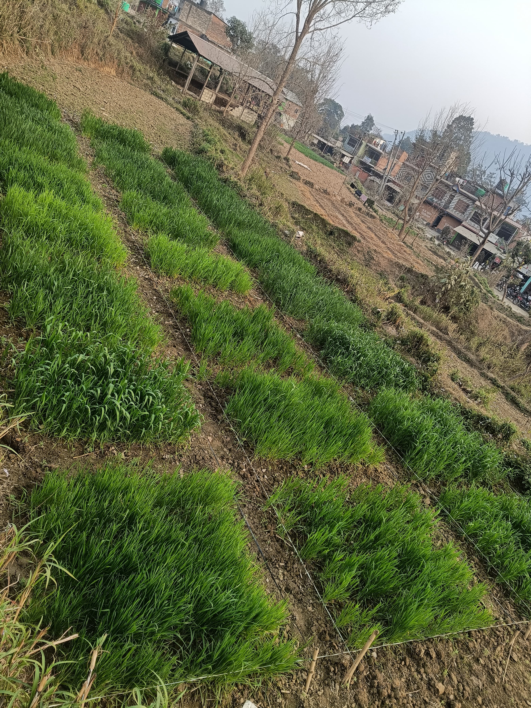

Phenotyping Wheat under Drought

Wheat production is highly vulnerable to drought stress, which threatens global food security. Modern phenotyping tools help identify traits like canopy temperature and root architecture that support resilience.
Research by Sujan Chapagain emphasizes integrating field phenotyping with advanced data analytics. This approach enables the identification of drought-tolerant genotypes capable of sustaining yields under climate-induced stress. Traits like chlorophyll content and canopy coverage are essential indicators of wheat resilience.

Fig 1. Wheat genotypes (image from Sujan Chapagain Research Field).

Fig 2. Phenotyping setup in the field (Chapagain, 2025).
Field-based sensors and root architecture studies provide vital insights into water-use efficiency. These methods are critical for developing climate-smart agriculture that ensures sustainable wheat production.
Importance of Landraces in Nepal

Landraces are traditional crop varieties conserved by farmers for generations. They safeguard genetic diversity and provide resilience against pests and climate variability.
Crops like finger millet, rice, and maize landraces embody unique local adaptations. They are vital resources for sustainable agriculture and cultural heritage. Community seed banks and participatory breeding can enhance their use and conservation.

Fig 3. Local farmer conserving landrace seeds in Nepal.